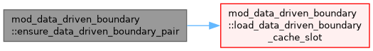
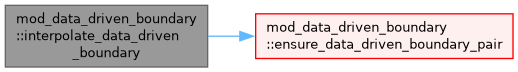
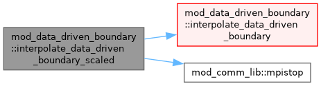
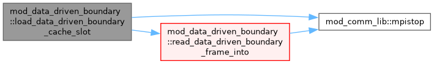
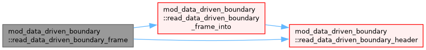
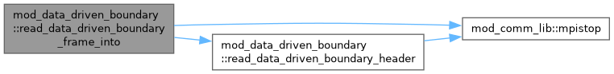

Utilities for reading AMRVAC data-driven magnetic boundary frames. More...
Data Types | |
| type | data_driven_boundary_series |
Functions/Subroutines | |
| subroutine | read_data_driven_boundary_frame (filename, snapshot_time, nx, ny, dx_km, dy_km, bframe) |
| subroutine | read_data_driven_boundary_header (filename, snapshot_time, nx, ny, dx_km, dy_km) |
| subroutine | read_data_driven_boundary_frame_into (filename, snapshot_time, nx, ny, dx_km, dy_km, bframe) |
| subroutine | read_data_driven_boundary_series (directory, series, prefix, expected_nframe) |
| subroutine | interpolate_data_driven_boundary (series, time_seconds, bframe, left_index, weight) |
| subroutine | ensure_data_driven_boundary_pair (series, lo, left_slot, right_slot) |
| subroutine | load_data_driven_boundary_cache_slot (series, iframe, slot) |
| subroutine | interpolate_data_driven_boundary_scaled (series, time_code, unit_time_seconds, driving_time_scale, bframe, left_index, weight) |
| subroutine | destroy_data_driven_boundary_series (series) |
Detailed Description
Utilities for reading AMRVAC data-driven magnetic boundary frames.
Python V1 writes each frame as a stream binary file with layout: snapshot_time, nx, ny, dx, dy, Bx, By, Bz.
The spacing dx/dy is stored in km and magnetic-field components are stored in Gauss. The magnetic data are ordered as a Fortran array (nx, ny, 3).
Function/Subroutine Documentation
◆ destroy_data_driven_boundary_series()
| subroutine mod_data_driven_boundary::destroy_data_driven_boundary_series | ( | type(data_driven_boundary_series), intent(inout) | series | ) |
Definition at line 273 of file mod_data_driven_boundary.t.
◆ ensure_data_driven_boundary_pair()
| subroutine mod_data_driven_boundary::ensure_data_driven_boundary_pair | ( | type(data_driven_boundary_series), intent(inout) | series, |
| integer, intent(in) | lo, | ||
| integer, intent(out) | left_slot, | ||
| integer, intent(out) | right_slot ) |
Definition at line 203 of file mod_data_driven_boundary.t.

◆ interpolate_data_driven_boundary()
| subroutine mod_data_driven_boundary::interpolate_data_driven_boundary | ( | type(data_driven_boundary_series), intent(inout) | series, |
| double precision, intent(in) | time_seconds, | ||
| double precision, dimension(series%nx,series%ny,3), intent(out) | bframe, | ||
| integer, intent(out), optional | left_index, | ||
| double precision, intent(out), optional | weight ) |
Definition at line 172 of file mod_data_driven_boundary.t.

◆ interpolate_data_driven_boundary_scaled()
| subroutine mod_data_driven_boundary::interpolate_data_driven_boundary_scaled | ( | type(data_driven_boundary_series), intent(inout) | series, |
| double precision, intent(in) | time_code, | ||
| double precision, intent(in) | unit_time_seconds, | ||
| double precision, intent(in) | driving_time_scale, | ||
| double precision, dimension(series%nx,series%ny,3), intent(out) | bframe, | ||
| integer, intent(out), optional | left_index, | ||
| double precision, intent(out), optional | weight ) |
- Parameters
-
[in,out] series Interpolate using AMRVAC code time. driving_time_scale is the observational-time advance per simulated second; values greater than one therefore accelerate the observed boundary evolution.
Definition at line 254 of file mod_data_driven_boundary.t.

◆ load_data_driven_boundary_cache_slot()
| subroutine mod_data_driven_boundary::load_data_driven_boundary_cache_slot | ( | type(data_driven_boundary_series), intent(inout) | series, |
| integer, intent(in) | iframe, | ||
| integer, intent(in) | slot ) |
Definition at line 230 of file mod_data_driven_boundary.t.

◆ read_data_driven_boundary_frame()
| subroutine mod_data_driven_boundary::read_data_driven_boundary_frame | ( | character(len=*), intent(in) | filename, |
| double precision, intent(out) | snapshot_time, | ||
| integer, intent(out) | nx, | ||
| integer, intent(out) | ny, | ||
| double precision, intent(out) | dx_km, | ||
| double precision, intent(out) | dy_km, | ||
| double precision, dimension(:,:,:), intent(out), allocatable | bframe ) |
Definition at line 24 of file mod_data_driven_boundary.t.

◆ read_data_driven_boundary_frame_into()
| subroutine mod_data_driven_boundary::read_data_driven_boundary_frame_into | ( | character(len=*), intent(in) | filename, |
| double precision, intent(out) | snapshot_time, | ||
| integer, intent(out) | nx, | ||
| integer, intent(out) | ny, | ||
| double precision, intent(out) | dx_km, | ||
| double precision, intent(out) | dy_km, | ||
| double precision, dimension(:,:,:), intent(out) | bframe ) |
Definition at line 69 of file mod_data_driven_boundary.t.

◆ read_data_driven_boundary_header()
| subroutine mod_data_driven_boundary::read_data_driven_boundary_header | ( | character(len=*), intent(in) | filename, |
| double precision, intent(out) | snapshot_time, | ||
| integer, intent(out) | nx, | ||
| integer, intent(out) | ny, | ||
| double precision, intent(out) | dx_km, | ||
| double precision, intent(out) | dy_km ) |
◆ read_data_driven_boundary_series()
| subroutine mod_data_driven_boundary::read_data_driven_boundary_series | ( | character(len=*), intent(in) | directory, |
| type(data_driven_boundary_series), intent(inout) | series, | ||
| character(len=*), intent(in), optional | prefix, | ||
| integer, intent(in), optional | expected_nframe ) |
Generated by